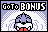
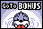

In addition to the Red and Blue fields, the game contains 5 bonus games. After a player gains three Poké Ball icons at the center of the screen, they will be able to access a bonus game. Which bonus game the player will play is dependent on the field they are playing on as well as how many bonus games they have already completed, in the following order.
| Red | Blue | |||
|---|---|---|---|---|
| First game |
|
Diglett |
|
Meowth |
| Second game |
|
Gastly |

|
Seel |
| Third game |
|
Mewtwo |
|
Mewtwo |
After completing the Mewtwo bonus, the next bonus game the player will play is the first game.
If at any point the player plays a bonus game but does not defeat it, the next bonus game will be the same one they have failed. They will have to defeat the bonus game in order to move on to the next.
Bonus games can be unlocked via the slots. See Slots to see which slot sets contain a chance to go to the bonus. The bonus that shows up on the roulette is the next bonus that the player has to defeat.
The Diglett stage, available as the first bonus on the Red field, contains 31 Diglett protecting a single Dugtrio at the back of the board. The player must hit each Diglett to knock it down, allowing the ball to move freely over the space where the Diglett was previously. When all Diglett are knocked down, the Dugtrio at the back of the board will become active. Dugtrio must be hit three times to complete the stage.
This stage has no time limit, but if the ball falls through the board, the game ends in a loss.
If the ball falls out of play while Dugtrio is defeated, but the flippers haven't turned red yet, the game will still end in a loss.
The Gastly stage, available as the second bonus on the Red field, contains several gravestone obstacles and Gastly crossing the field. Hitting each Gastly will cause it to disappear and be replaced shortly afterward by another Gastly. Once ten Gastly have been hit, Haunter appear on the field instead. Hitting ten Haunter will cause a Gengar to emerge. Gengar must be hit five times to complete the stage.
This stage has a time limit of 1:30. If the ball falls through the board, it will reappear with no penalty to the player.
The Meowth stage, available as the first bonus on the Blue field, contains a single Meowth running around the field. When Meowth is hit, it drops a pile of coins on the field. Up to six piles of coins can be present on the field at once; hitting Meowth a seventh time will not drop any coins. When coins are collected, they are added to a counter above the field. The player must get 20 coin icons at one time in order to complete the stage. Collecting multiple coin piles without hitting Meowth in between will cause the number of coin icons obtained with each successive coin pile collected to multiply, to a max of x6.
This stage has a time limit of 1:00. If the ball falls through the board, it will reappear, but all currently present coin piles will disappear, and the player will lose four coin icons.
The Seel stage, available as the second bonus on the Blue field, contains multiple Seel swimming underwater, silhouetted. The Seel will occasionally pop their heads above water for a brief time. If they are not hit in this time, they will eventually duck back underwater. If they are hit, the player will receive a circle icon at the top of the board, and the Seel will duck underwater. If multiple Seel are hit in a row without any of them ducking underwater on their own, the player will receive a multiplier for each successive Seel, which doubles with every consecutive hit. The potential for the multiplier is indicated by a sparkle effect on the rightmost circle icon. The player must get 20 icons at one time in order to complete the stage.
This stage has a time limit of 1:30. If the ball falls through the board, it will reappear, but all Seel will duck underwater if they were above it, and the player will lose four circle icons.
The Mewtwo stage, available as the third bonus on both fields, contains Mewtwo. Mewtwo is surrounded by a moving circle of six black balls. Hitting a black ball dead on will cause it to deflect the ball and disappear for a brief time; however, it seems to be possible to hit Mewtwo in spite of this, as the hit boxes on the black balls don't seem to completely prevent the ball from going through to Mewtwo. The number of black balls circling Mewtwo decreases as Mewtwo is hit. The player must hit Mewtwo 25 times to complete the stage.
This stage has a time limit of 2:00. If the ball falls through the board, it will reappear with no penalty to the player.
The Mewtwo bonus stage must be completed twice in order to unlock Mew; see Catching Mew for further information.